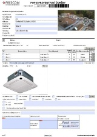
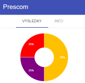
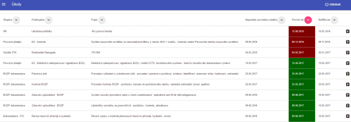

Systém ActivePrevent - spojujeme IT s praxí oblasti strojírenství, potravinářství i facility
Začínáme tam, kde jiní končí – i nejmenší detail ovlivní celek
Interaktivní formuláře - checkformy
ActivePrevent Checkform
Digitalizace v údržbě a servisu
ActivePrevent Monitor
Interaktivní formuláře - checkformy

CO JE CHECKFORM (CHF)? Je PDF formulář, do kterého je možné vložit různé interaktivní a ovládací prvky. Pro práci s ním není třeba žádného nestandardního programu, stačí Adobe Reader. Příkladů užití je mnoho – v oblasti servisu, údržby, administrativě, BOZP a PO dokumentaci a jiné. Formulář může pracovat on-line i off-line. Funkcionalita vhodná i pro systémy DMS např. Sharepoint.
ActivePrevent Checkform
Pro využití interaktivních PDF formulářů – Checkformů, jsme připravili systém zajišťující jejich distribuci k technikům, případné fyzické ověření přítomnosti technika na požadovaném místě, sběr výsledků z provedené práce, na straně serveru centrální zpracování obsahu formulářů i s reakcí na výsledek zpracování.

CO MŮŽETE SE SYSTÉMEM ACTIVEPREVENT Checkform ZÍSKAT?
Finanční úspory i v desítkách procent – snížení ztráty při
odstávce zařízení, udržení hodnoty zařízení, snížené
provozní náklady
Standardizace provádění pravidelných činností – jednotná
metodika, centrální správa
Zajištění téměř 100% prokazatelnosti provedení činnosti
Porovnání výstupů, statistiky
Přínosy v efektivitě práce, sdílení znalosti technologie –
zastupitelnost
Dohledatelnost provedených úkonů – definice úkonů v
checkformu
Zvýšení kvality vyplnění – ověřujeme přímo v checkformu
zadané údaje
Spokojenost uživatelů – přizpůsobujeme checkformy lidem
Jednoduchá archivace vyplněných formulářů
Aplikace elektronického podpisu – záznam času a identifikace
osoby vyplňující checkform
Preferovaný způsob evidence pro auditory
Vedení skladu náhradních dílů (ND) - efektivní hospodaření s
ND – další finanční úspory
Možnost jazykových mutací (EN, DE, SK, RU)
Před zavedením je průměrně na technologiích 45% závad, po zavedení již jen 15% a výhled dalšího zlepšování!
Digitalizace činností v servisu
Zavedení v praxi
Analýza požadavků na úkony – seznámení se s technologií a
pořízení fotodokumentace
Vytvoření databáze kontrolních bodů, přiřazení úkonů,
periody provedení, nastavení kvalifikace techniků, vyrobení
sady čipů pro kontrolní body, označení kontrolních bodů čipy
Vytvoření checkformu na základě požadavků
Přenos checkformů na mobilní zařízení (MZ) technika
Identifikace technika v MZ čipovou kartou
Zpřístupnění CHF pro specifické místo a konkrétního technika
(vč. kontroly kvalifikace)
Načtení čipu v kontrolním bodě MZ je otevřena příslušná sada
CHF k vyplnění
Fyzické provedení úkonů dle CHF, kde se provedené úkony
potvrdí a případně se přidá vlastní komentář či doplní
fotodokumentace – tyto uživatelské vstupy budou
vyhodnocovány
CHF je po vyplnění podepsán elektronickým podpisem a uzamčen
pro další práci
Přesun vyplněných CHF na centrální server ke zpracování a
vyhodnocení
Podle předdefinovaných pravidel je provedena požadovaná
reakce na vyplněné CHF – např. při vyhodnocené závadě je
automaticky vytvořena servisní zakázka nebo návrh na
nápravné opatření
ActivePrevent Monitor
ActivePrevent Monitor je chytrá aplikace, která Vám umožní šetřit náklady, dodržet a kontrolovat vše, co je potřeba. Naši odborníci zabezpečují aktuálnost dat a přímou podporu.

Zajištění vysoké pravděpodobnosti splnění
Aplikace informuje uživatele, nutí jej úkol převzít a splnit
Okamžitý přehled stavu splnění
Okamžitý přehled blížících se termínů
Spolupráce s interaktivními formuláři – checkformy
Aplikace ActivePrevent Monitor podporuje firemní procesy v
oblasti BOZP, PO, preventivní údržby, vozového parku a
dalších, kde se pracuje s pravidelnými termíny činností.
Tyto procesy jsou v aplikaci zastoupeny úkoly, jsou
naplánovány a uživatelé o nich informováni. Termíny mohou
být v časové ose dynamicky změněny.
Pokud úkol požaduje jako výsledek záznam je připojen
interaktivními formulář – checkform.